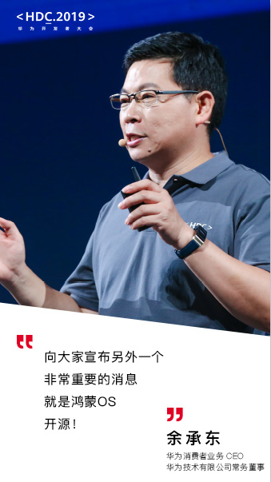

一、鸿蒙OS开源发布
8月9日，华为在本次大会上发布了基于微内核的全场景分布式操作系统鸿蒙OS，并宣布鸿蒙OS将对全球开发者开源。同时，华为全面开放HMS，使全球开发者可以快速接入HMS生态，实现生态共享。
华为消费者业务CEO余承东说，“鸿蒙OS联接了万物，选择鸿蒙就是选择未来。华为长期致力于包括芯片和OS在内的底层技术创新，把复杂留给自己，把简单留给开发者”。

鸿蒙OS可以灵活适配各个终端场景，甚至可以跨平台调用硬件，所有硬件互为外设，这里面想象空间很大。简而言之，未来不再是一个个割裂的硬件，割裂的硬件系统，而是一个系统横跨多个硬件，数据无缝衔接，互相调用各个终端的设备。
（1）、余承东介绍的鸿蒙os的技术特性：
1
、分布式架构首次用于终端OS，实现跨终端无缝协同体验。
2
、确定时延引擎和高性能IPC技术实现系统流畅。
3
、基于微内核架构重塑终端设备可信安全。
4
、通过统一IDE支撑一次开发，多端部署，实现跨终端生态共享。
（2）、鸿蒙OS主要面向：
IoT设备（穿戴、大屏、车机等），并随时可用到手机上，考虑到生态原因优先使用Android生态，从Android系统迁移到鸿蒙生态非常便捷，只需要1到2天。
（3）、安全级别
可实现跨终端无缝协同体验，安全级别能达到5和5+，是最高级别的安全OS。
（4）、权限分割
鸿蒙中将权限分割成不同的子权限，没有Root权限，避免了以往一旦取得Root即获得全部权限的恶意进攻手段。
（5）、兼容性：
Linux、Unix和Android系统
二、鸿蒙OS两大核心
1、微内核
（1）、微内核与宏内核的区别：
宏内核：把所有系统服务都放到内核里，包括文件系统、设备驱动等，安卓系统就是其中代表。但宏内核有着无法调和的矛盾，那就是随着操作系统越来越复杂，内核里面的东西也越来越多。易产生操心系统代码量庞大，漏洞无法避免和大量服务、硬件驱动都在内核中，导致操作系统可扩展性差这两个问题
微内核：核心思想是简化内核，使内核成为一个只提供最基础的系统服务的东西，其他统统都放在内核之外。比如内核中只保留多进程调度、多进程通信等服务。其他系统服务甚至外设驱动都放在了用户态中来实现。
（2）、微内核优势：
高安全性、高可靠、高扩展性、高可维护性、支持分布式计算。
2、方舟编译器
安卓绝大多数应用是使用 Java 语言写的，但CPU 只能理解汇编指令，因此需要一个虚拟机来把Java 高级语言转换成机器能懂的语言，然而VM 的存在会导致程序运行变慢甚至卡顿。
（1）、华为编译器最大的优势：
通过方舟编译器，开发者的应用在下载之前就已经转化成为机器可以识别的代码，因而可以在手机上快速安装、启动和运行，而无需再经过 VM 的编译。
某种程度上，方舟编译器是将编译过程提前到应用开发阶段，从而大幅度减少了智能手机和操作系统的运行负担。
华为还正式面向全球发布App Gallery Connect服务，覆盖“创意—开发—分发—运营—分析”全流程服务，助力开发者全流程高效运营。同时，“耀星计划”全面升级，激励资源从10亿元人民币增至10亿美元，并从中国市场全面推向全球开发者，与业界领先的生态伙伴共建激励联盟，激励和扶持全球开发者创新。为帮助开发者的创意更好地在华为全场景设备上落地，华为将加大对开发者的支持力度，提供多样化的工具包，开放更多平台能力。
移动芯片上，麒麟平台将开放三大能力：
1
通过多媒体融合能力开放，麒麟平台可助力短视频应用开发者创意落地；
2
融合感知能力开放，可让APP更聪明、更懂用户；
3
、AI计算能力开放，让普惠AI开发成为可能。
为了加快非手机设备的智慧化发展，在不同场景下增强用户的使用体验，华为推出了HiLink & LiteOS & 芯片的三件套工具，从端云业务开放平台、操作系统到芯片，端到端解决IoT产业发展困局，让IoT开发更简单更高效。
HiLink 开放平台实现了所有IoT设备自动发现、连接简单、一次接入、多端多模控制，最终获得多设备情景智能联动的极致体验。
LiteOS是IoT硬件与应用的桥梁。独有的轻量化 IoT端侧开发编程框架Maple JS，运行性能接近C语言，让开发者无需精通嵌入式即可快速开发。HUAWEI LiteOS和凌霄、鸿鹄等海思全场景物联芯片的结合，将为开发者提供设备智能化的底层技术优化。
五、发展前景与挑战
操作系统行业有三大趋势：
1
开源吸引开发走向
2
软硬件平台一体化
3
、生态至上
鸿蒙系统已然开源，也是以打通手机、电脑等多种硬件，兼容安卓与全部的 Web 应用，实现软硬件平台一体化为基础。
最重要的就是第三条，生态至上，对于刚刚发布的鸿蒙OS来说，快速建立生态也是目前最大的考验，这也将决定鸿蒙能走得多远。
希望华为可以快速发展，不断攻坚克难，走向高峰。